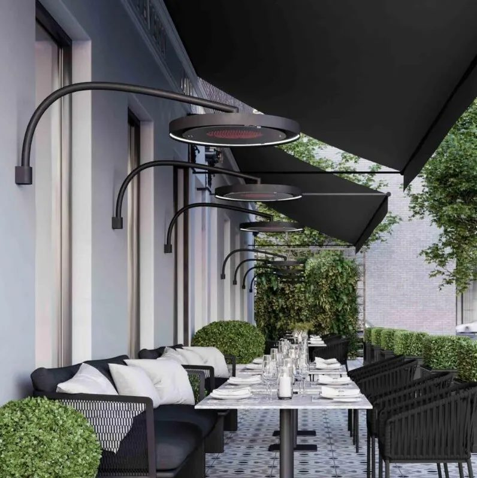
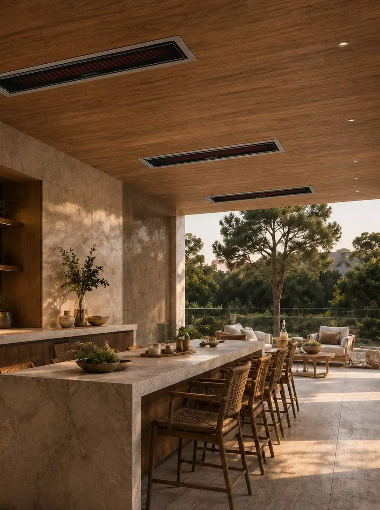
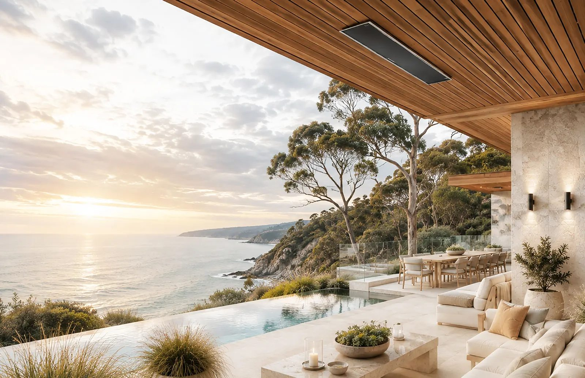

Electrification rules, read closely for what they mean on the terrace.

Outdoor Heat In An All-Electric Future
The terrace of an all-electric building can be every bit as warm and inviting as any other, and planned well it stays that way whichever direction the rules move. Plan the outdoor space around electric radiant heat from the first drawing, and those evenings outside stay secure.
01New York City
02New York State
03California
04Berkeley
05Washington State
06Denver
07Colorado
08Massachusetts
Facts in this guide are stated as of 29 October 2026. Laws, rulings and code adoptions change; confirm each one with the authority having jurisdiction before you rely on it.
01A Warm Terrace Under Every New RuleOutdoor Heat In An All-Electric Future
Do All-Electric Codes Ban Gas Patio Heaters? Rarely By Name.
Read each rule for what it regulates (gas piping, combustion or heating equipment), where it applies (inside the building, the premises or any equipment) and when (new construction, major renovation or replacement). Electric radiant heat is the option they leave most open.
#
Place and rule
What it regulates
Dates
Does it reach outdoor heaters?
01
New York CityLocal Law 154 of 2021 (Admin. Code §24-177.1, §28-506.1)
Combustion in new buildings
Under 7 stories from 1 Jan 2024; all occupancies from 2 Jul 2027, by construction-document filing date
Not by name. A piped gas heater in a new building has no permitted gas supply; unpiped, intermittent devices are excepted only if they do not supply heat.
02
New York StateAll-Electric Buildings Act (2023)
Fossil-fuel equipment and building systems in new buildings
7 stories or less first. Upheld by the Second Circuit on 30 Jun 2026; state enforcement had been paused pending appeal
Not established.
03
California2025 Building Energy Efficiency Standards (Title 24, Part 6)
Heat-pump baselines for indoor space and water heating (prescriptive; not a gas ban)
Permit applications from 1 Jan 2026
Not found in the sources reviewed.
04
BerkeleyBMC Chapter 12.80 (2019)
Natural gas piping in new buildings, to the property line
Preempted (9th Cir. 2023); repealed 2024; no longer in force
Yes, while in force: it reached piped outdoor appliances on new premises.
05
Washington StateWSEC-Commercial C403.1.4 and C403.11.1
Outdoor heat: radiant, with occupancy or timer control. Indoor space heating by heat pump
Initiative 2066 struck down in Sep 2026
Yes, directly: outdoor heat must be radiant and switch off when unoccupied. Fuel is not restricted.
06
Denver2025 Denver Energy Code
New buildings: no fossil furnaces, no electric resistance space heat, no fossil or electric resistance water heaters, with exceptions
Effective 31 Dec 2025 / 1 Jan 2026 (city pages differ)
Unclear.
07
ColoradoHB22-1362 and the Model Electric Ready and Solar Ready Code
Electric-ready and solar-ready provisions in local energy codes
DFPC adoption effective 15 Aug 2025
Electric-ready capacity, not a ban.
08
MassachusettsMunicipal Fossil Fuel Free Building Demonstration (225 CMR 24.00)
Fossil fuel in new construction and major renovation, by local by-law
Ten participating municipalities
Depends on each town.
Reaches outdoor heaters directly. Status as of 29 October 2026.
Sources: the instruments named above, as listed on the last page (sources 1–16).
02The Dates That DecideOutdoor Heat In An All-Electric Future
The Filing Date Often Decides Which Rules Apply
Rulings and adoptions, in order. Two courts have read federal appliance-efficiency law (EPCA) in opposite ways, so the question remains unsettled nationally.
1 Jan 2020BerkeleyNatural gas infrastructure prohibited in newly constructed buildings
17 Apr 2023BerkeleyNinth Circuit panel holds that EPCA preempts the ordinance
1 Jan 2024New York CityLocal Law 154 applies to buildings under seven stories
2 Jan 2024BerkeleyRehearing en banc denied; amended opinion, 89 F.4th 1094
15 Mar 2024Washington StateAmended heat-pump space heating rule (C403.1.4) in effect
14 May 2024BerkeleyRepeal of Chapter 12.80, first reading, 8–0
Dec 2024Washington StateSupplemental-heat options broadened
15 Aug 2025ColoradoDFPC adopts the Model Electric Ready and Solar Ready Code
Nov 2025New York StateState agrees to suspend enforcement regulations pending appeal
31 Dec 2025 / 1 Jan 2026Denver2025 Denver Energy Code effective (city pages differ)
1 Jan 2026California2025 Energy Code applies to permit applications
30 Jun 2026New YorkSecond Circuit: EPCA does not preempt the All-Electric Buildings Act or LL154
Sep 2026Washington StateSupreme Court (6–3) holds Initiative 2066 unconstitutional in its entirety
29 Oct 2026This guideFacts stated as of this date
2 Jul 2027New York CityLocal Law 154 applies to all occupancies
Sources: City of Berkeley, Berkeley Municipal Code Chapter 12.80 (Ord. 7,672-N.S.) and §12.80.030, 2019; AHRI, Ninth Circuit Denies en Banc Appeal of Berkeley Gas Ban Decision, 2024; NYC Department of Buildings, Local Law 154: Building Electrification, 2026; Washington State Legislature, WSR 24-23-102 amending WAC 51-11C-40314 (Section C403.1.4), 2024; City of Berkeley, Repeal of BMC Chapter 12.80 (Ord. 7,907-N.S.), Council item 4 June 2024; Colorado Division of Fire Prevention and Control, Guidance on DFPC Colorado Model Electric Ready and Solar Ready Code adoption, 2025; JD Supra, New York Agrees to Delay Implementation of the All-Electric Buildings Act, 2025; City and County of Denver, 2025 Denver Energy Code – Key Commercial Amendments, 2025; California Energy Commission, 2025 California Energy Code Fact Sheet, 2024; Spectrum News NY1, Court affirms New York's all-electric buildings mandate, 2026; Axios Seattle, Washington Supreme Court strikes down natural gas initiative, 2026
03New York CityOutdoor Heat In An All-Electric Future
Where New Buildings Run On Electric
01
25kg CO₂
Per million Btu: Local Law 154 bars burning any fuel that emits this much or more inside new buildings – which covers natural gas and oil.
Source: New York City Administrative Code §24-177.1 and §28-506.1 (American Legal Publishing), 2021
02
Two Dates, By Filing
When LL154 applies, by construction-document filing date
Source: NYC Department of Buildings, Local Law 154: Building Electrification, 2026
03
The Exceptions – And What Is Not Among Them
Exceptions named by the Department of Buildings
Utilities
DEP facilities
Manufacturing
Laboratories
Laundromats
Hospitals
Crematoria
Commercial kitchens
Emergency / standby power
Outdoor heaters are not an exception
Source: NYC Department of Buildings, Local Law 154: Building Electrification, 2026
04
The Portable Question
The code excepts devices that meet all three conditions
1Not connected to the building's gas or fuel-oil pipingA portable heater: yes
2Used intermittentlyA portable heater: yes
3Not used to supply heat or hot waterSupplying heat is its purpose
Whether a portable propane heater on the terrace of a new building falls inside that exception is a question for the Department of Buildings and FDNY.
Source: New York City Administrative Code §24-177.1 and §28-506.1 (American Legal Publishing), 2021
05
Outdoor Dining, 2020 Guidance
Heaters allowed in outdoor dining under the 2020 winter guidance
Sidewalk
Roadway
Electric radiant
Allowed
Allowed
Natural gas radiant
Allowed
Not allowed
Propane
Only under an FDNY permit
Written for the emergency program and governed by fire and right-of-way rules: confirm what applies today.
04Berkeley And CaliforniaOutdoor Heat In An All-Electric Future
Why A Repealed Ordinance Still Shapes The Debate
01
To The Property Line
"Natural gas infrastructure": fuel gas piping in or connected to a building or structure, or within the property lines of the premises, from the meter onward
Covered piping. A piped gas heater on a new patio was covered, though the ordinance never used the word "heater".
Source: City of Berkeley, Berkeley Municipal Code Chapter 12.80 (Ord. 7,672-N.S.) and §12.80.030, 2019
02
From Ban To Repeal
1 Jan 2020Prohibition on natural gas infrastructure in newly constructed buildings takes effect
17 Apr 2023California Restaurant Association v. City of Berkeley: Ninth Circuit panel holds EPCA preempts the ordinance
2 Jan 2024Rehearing en banc denied, with an amended opinion
2024Berkeley stops enforcing and repeals Chapter 12.80
Sources: City of Berkeley, Berkeley Municipal Code Chapter 12.80 (Ord. 7,672-N.S.) and §12.80.030, 2019; AHRI, Ninth Circuit Denies en Banc Appeal of Berkeley Gas Ban Decision, 2024; City of Berkeley, Repeal of BMC Chapter 12.80 (Ord. 7,907-N.S.), Council item 4 June 2024
The ruling turned on how the law was written, and left the wider question of electrification open: the Second Circuit read EPCA the other way for New York. Cities in the Ninth Circuit (including California, Washington and Oregon) have since moved towards energy-code routes such as heat-pump baselines and reach codes, which are less exposed to EPCA and still shape what gets built.
03
California
1 Jan2026
The 2025 Energy Code applies to permit applications from this date. It does not ban gas.
Heat pumps are the baseline for space and water heating – a dual baseline for new single-family homes.
Prescriptive heat-pump space heating now covers all climate zones.
Gas remains possible through the performance path, at a compliance cost.
In the sources reviewed, these baselines govern heating of conditioned space; we found no Part 6 provision written for patio heaters. Local reach codes can be stricter, so check with the city as well.
Sources: California Energy Commission, 2025 California Energy Code Fact Sheet, 2024; Permit Sonoma, 2025 CA Energy Code Significant Changes, 2025
05The Codes That Already Favor Radiant WarmthOutdoor Heat In An All-Electric Future
Warmth That Falls On The Guests, And Switches Off When The Terrace Empties
01
Heating Outside A Building: The Rule Most Often Missed
Washington's commercial energy code, adopting the 2021 IECC, Section C403.11.1
RadiantAny system installed to heat outside a building
+
Occupancy sensor or timer switchSo it switches off when no one is present
=
Compliant outdoor heatWhatever the fuel
ASHRAE 90.1 likewise requires radiant heating where unenclosed spaces are heated. The same IECC provision appears in other states that adopt the model code; section numbers vary by edition and state amendment.
Sources: Washington State Legislature, WAC 51-11C-40392, Section C403.11 (2021 WSEC-Commercial), 2024; LEEDuser (BuildingGreen), ASHRAE 90.1 Section 6.5.8.1 Heating of unenclosed spaces, 2023
Heat You Can Feel, Not See.
02
Forced Air Falls Outside
Forced-air or convective outdoor heaters fall outside these codes on commercial projects, leaving radiant heat as the compliant choice.
03
Controls Become Part Of Compliance
Affinity Smart-Heat Controls provide schedules and timers through the Bromic Smart-Heat app, with zones and a manual wall switch. Every heater is specified with its controls: Affinity Smart-Heat On/Off, Dimmer or Eclipse controller, wall switch and app.
Wi-Fi and app features require compatible Affinity controls, sold separately.
Source: Bromic, Lookbook 2026
04
Washington State
6–3
The Washington Supreme Court vote, September 2026, holding Initiative 2066 unconstitutional in its entirety.
The commercial code requires heat-pump space heating (C403.1.4), the amended version in effect from 15 March 2024, with supplemental-heat options broadened in December 2024.
Initiative 2066 had been approved by voters in 2024 to curb these provisions.
Outdoor heat falls under the radiant-plus-controls rule above, whatever the fuel.
Sources: Washington State Legislature, WSR 24-23-102 amending WAC 51-11C-40314 (Section C403.1.4), 2024; Axios Seattle, Washington Supreme Court strikes down natural gas initiative, 2026; Washington State Legislature, WAC 51-11C-40392, Section C403.11 (2021 WSEC-Commercial), 2024
06Three More Places Shaping The TerraceOutdoor Heat In An All-Electric Future
Denver, Colorado, Massachusetts: One Direction
01
Denver
What New Buildings May Not Use
2025 Denver Energy Code, new buildings, with exceptions
Fossil-fuel furnaces
Electric resistance space heat
Fossil-fuel water heaters
Electric resistance water heaters
Electric infrared heaters are resistance devices, so the reading matters: if Denver treats outdoor radiant heat as "space heat", the rule would restrict electric patio heaters as well as gas. Ask Denver Community Planning and Development how outdoor radiant heaters are classified. The city's pages give both 31 December 2025 and 1 January 2026 as the effective date.
Source: City and County of Denver, 2025 Denver Energy Code – Key Commercial Amendments, 2025
02
Colorado
2021IECC
Local governments updating building codes adopt an energy code at least as strong as the 2021 IECC, plus model electric-ready and solar-ready provisions.
HB22-1362 sets this requirement for local governments.
The state fire prevention division's own adoption took effect on 15 August 2025.
Electric-ready rules require capacity and pathways for future electric equipment, and do not in themselves ban gas.
Sources: Colorado General Assembly (via LegiScan), HB22-1362 Building Greenhouse Gas Emissions, 2022; Colorado Division of Fire Prevention and Control, Guidance on DFPC Colorado Model Electric Ready and Solar Ready Code adoption, 2025
03
Massachusetts
10
Municipalities allowed to require fossil-fuel-free new construction and major renovation under 225 CMR 24.00. Each adopts its own by-law.
Acton
Aquinnah
Arlington
Brookline
Cambridge
Concord
Lexington
Lincoln
Newton
Northampton
The model rule exempts research laboratories and health-care facilities; we found nothing written for outdoor appliances.
Source: Massachusetts Department of Energy Resources, Municipal Fossil Fuel Free Building Demonstration Program; 225 CMR 24.00, 2024
07Ready For Warmth From The First DrawingOutdoor Heat In An All-Electric Future
Nine Moves At Design Stage Keep The Terrace Electric-Ready
Outdoor heat costs least, and looks its best, when it is added before the ceiling closes and the panel schedule is fixed.

01
Load
Add the heater load to the service calculation: sum the wattage of every planned heater.
Avoids a service upgrade later.
02
Circuits
Dedicated branch circuits; conductors at not less than 125% of the heating load per NEC 424.
Code requirement for fixed electric space-heating equipment.
03
Voltage
Confirm each model's rated voltage; commercial options have included 208, 240 and 277 V.
Voltage drives amperage and circuit count.
04
Panel space
Reserve breaker spaces for every heater zone plus one spare.
Late additions are where projects stall.
05
Conduit
Empty conduit with pull string to every future heater and controller location, plus spare conduit to the panel.
Lets heat be added without opening finishes.
06
Recess cavities
Frame and block soffit cavities to the recess kit's dimensions.
Recessed heaters need depth that is hard to add later.
07
Controls
Locate controllers and wall switches; plan Wi-Fi coverage at controller locations; coordinate any Control4, Crestron or Lutron interface.
Controls are required, and energy codes may require occupancy or timer shut-off.
08
Zoning
One zone per area used at different times.
Lets schedules match use, which saves energy.
09
Damp and wet locations
Boxes, devices and heaters listed for the location.
Outdoor locations are damp or wet.
Sources: EC&M, Article 424: Fixed Electric Space-Heating Equipment, 2020; Bromic, The Official Outdoor Heating Planning Guide v1.2 (US), 2021; Bromic, Lookbook 2026
08How Much Load A Heater AddsOutdoor Heat In An All-Electric Future
The Arithmetic Your Electrician Will Run
01
125%
Of the heating load: the minimum branch-circuit conductor rating for fixed electric space-heating equipment under NEC Article 424, which also requires listing for damp and wet locations.
Source: EC&M, Article 424: Fixed Electric Space-Heating Equipment, 2020
02
From Watts To Conductor Size
Two steps, per heater circuit
WattsThe heater's rated load
÷
VoltsThe model's rated voltage
=
AmpsThe heating load
×
125%Conductor sizing load
Your electrician sizes the circuit and protective device to the adopted NEC and the nameplate.
Source: EC&M, Article 424: Fixed Electric Space-Heating Equipment, 2020
03
Commercial Supply Voltages
Commercial options have included
208V
240V
277V
Confirm each model's rated voltage: voltage drives amperage and circuit count. Gas work follows ANSI Z223.1/NFPA 54; electrical work follows ANSI/NFPA 70.
Source: Bromic, The Official Outdoor Heating Planning Guide v1.2 (US), 2021
09The Choice That Travels Well With Every RuleOutdoor Heat In An All-Electric Future
Set Side By Side, Electric Radiant Sits Most Comfortably
Rule
Electric radiant (built-in)
Piped natural gas (built-in)
Propane (portable)
All-electric new buildings (NYC LL154, NY State)
Compatible
No gas supply in an all-electric building
A narrow, unclear exception: ask DOB and FDNY
Heat-pump baselines (CA 2025)
Not affected in the sources reviewed
Not banned: baselines address indoor heating
Not affected in the sources reviewed
Property-line gas definitions (the Berkeley model)
Not affected in the sources reviewed
Covered
Not piped: depends on wording
Outdoor heating rule (IECC / WSEC C403.11.1)
Compliant when radiant and on occupancy or timer control
Compliant when radiant and controlled
Compliant when radiant, though automatic shut-off is harder
Denver's new-building rules
Electric resistance space heat rule: ask Denver CPD
Fossil restrictions may apply
Depends on scope
Permit and installer
Electrical permit and a licensed electrician
Plumbing or mechanical permit and a licensed gas fitter, to ANSI Z223.1/NFPA 54
Fire-department rules govern storage and use
Controls
Affinity controllers, wall switch, app schedules and zones
Gas controls per model
Manual at the unit
Outlook
Aligns with every direction of travel
Exposed to new local rules
Exposed to fire and local rules
Electric radiant is specified with its controls: Affinity Smart-Heat On/Off, Dimmer or Eclipse controller, wall switch and app. Wi-Fi and app features require compatible Affinity controls, sold separately.
Sources: NYC Department of Buildings, Local Law 154: Building Electrification, 2026; New York City Administrative Code §24-177.1 and §28-506.1 (American Legal Publishing), 2021; California Energy Commission, 2025 California Energy Code Fact Sheet, 2024; City of Berkeley, Berkeley Municipal Code Chapter 12.80 (Ord. 7,672-N.S.) and §12.80.030, 2019; Washington State Legislature, WAC 51-11C-40392, Section C403.11 (2021 WSEC-Commercial), 2024; City and County of Denver, 2025 Denver Energy Code – Key Commercial Amendments, 2025; Bromic, Lookbook 2026; Bromic, The Official Outdoor Heating Planning Guide v1.2 (US), 2021
Your Planning Checklist
Identify the AHJ and every instrument that applies: city law, state code, reach code, fire code.
Note the dates: application filing date often decides which rules apply.
Ask whether the AHJ treats outdoor radiant heat as "space heating" (Denver) or as heating outside the envelope.
Specify radiant heaters with occupancy or timer control on commercial projects.
Include outdoor heater load in the service calculation; reserve panel space.
Rough in conduit, boxes and recess framing before finishes.
Schedule controls for every zone: Affinity On/Off, Dimmer or Eclipse controller, wall switch, app.
Use the spec kit's Section 23 83 33 so the electric solution is not swapped at bid.
10Questions, And The Fine PrintOutdoor Heat In An All-Electric Future
Five Questions Specifiers Ask
Q1
Can I install a gas patio heater on a new building in New York City?
Not on piped gas, because a new building under LL154 has no permitted gas supply. Portable devices fall under a narrow exception whose application to heaters is unclear, so ask the Department of Buildings and FDNY.
Q2
Did the Berkeley ruling end gas bans?
It ended Berkeley's and constrains similar ordinances in the Ninth Circuit. The Second Circuit upheld New York's laws in 2026, so the question remains unsettled nationally.
Q3
Does California's 2025 Energy Code ban gas heaters?
No. It makes heat pumps the baseline for indoor space and water heating, and gas remains possible through the performance path.
Q4
Do energy codes say anything about outdoor heaters?
Yes. Under IECC-based commercial codes such as Washington's, outdoor heating must be radiant and controlled by an occupancy sensor or timer.
Q5
Are electric outdoor heaters affected by bans on electric resistance heat?
Possibly in Denver, where new buildings may not use electric resistance space heat. Confirm with the city how outdoor radiant heaters are classified.
Disclaimer
This guide is general information, not legal or code advice. It summarises laws and codes as of 29 October 2026 from the sources cited, some of which are secondary summaries. Requirements vary by jurisdiction, edition, amendment and filing date. Always confirm with the local building authority, fire department and energy code official, and have electrical work designed and installed by a licensed electrician and gas work by a licensed gas fitter. Read the primary source for every rule before you rely on it.

11Primary SourcesOutdoor Heat In An All-Electric Future
Sources
NYC Department of Buildings, Local Law 154: Building Electrification, 2026. nyc.gov/site/buildings/codes/ll154-building-electrification.page
New York City Administrative Code §24-177.1 and §28-506.1 (American Legal Publishing), 2021. codelibrary.amlegal.com/codes/newyorkcity/latest/NYCadmin/0-0-0-43994
JD Supra, New York Agrees to Delay Implementation of the All-Electric Buildings Act, 2025. jdsupra.com/legalnews/new-york-agrees-to-delay-implementation-4871346
California Energy Commission, 2025 California Energy Code Fact Sheet, 2024. energy.ca.gov/sites/default/files/2024-09/2025_California_Energy_Code_Fact_Sheet_ada.pdf
Permit Sonoma, 2025 CA Energy Code Significant Changes, 2025. permitsonoma.org (2025-CA-Energy-Code-Significant-Changes.pdf)
City of Berkeley, Berkeley Municipal Code Chapter 12.80 (Ord. 7,672-N.S.) and §12.80.030, 2019. berkeley.municipal.codes/BMC/12.80.030
AHRI, Ninth Circuit Denies en Banc Appeal of Berkeley Gas Ban Decision, 2024. ahrinet.org/news-events/news/ninth-circuit-denies-en-banc-appeal-berkeley-gas-ban-decision
City of Berkeley, Repeal of BMC Chapter 12.80 (Ord. 7,907-N.S.), Council item 4 June 2024. berkeleyca.gov (2024-06-04 Item 01 Repeal of Berkeley Municipal Code Chapter 12.80.pdf)
Washington State Legislature, WAC 51-11C-40392, Section C403.11 (2021 WSEC-Commercial), 2024. lawfilesext.leg.wa.gov (WAC 51-11C-40392)
Washington State Legislature, WSR 24-23-102 amending WAC 51-11C-40314 (Section C403.1.4), 2024. lawfilesext.leg.wa.gov/law/WSR/2024/23/24-23-102.htm
Axios Seattle, Washington Supreme Court strikes down natural gas initiative, 2026. axios.com/local/seattle/2026/09/17/washington-supreme-court-strikes-down-natural-gas-initiative-2066
City and County of Denver, 2025 Denver Energy Code – Key Commercial Amendments, 2025. denvergov.org (2025 Denver Energy Code – Key Commercial Amendments)
Colorado Division of Fire Prevention and Control, Guidance on DFPC Colorado Model Electric Ready and Solar Ready Code adoption, 2025. dfpc.colorado.gov (Guidance on DFPC CMERSRC Adoption)
Colorado General Assembly (via LegiScan), HB22-1362 Building Greenhouse Gas Emissions, 2022. legiscan.com/CO/text/HB1362/id/2581948
Massachusetts Department of Energy Resources, Municipal Fossil Fuel Free Building Demonstration Program; 225 CMR 24.00, 2024. mass.gov/info-details/municipal-fossil-fuel-free-building-demonstration-program